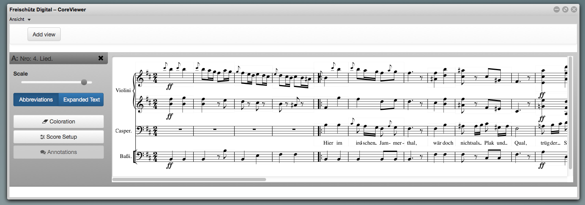
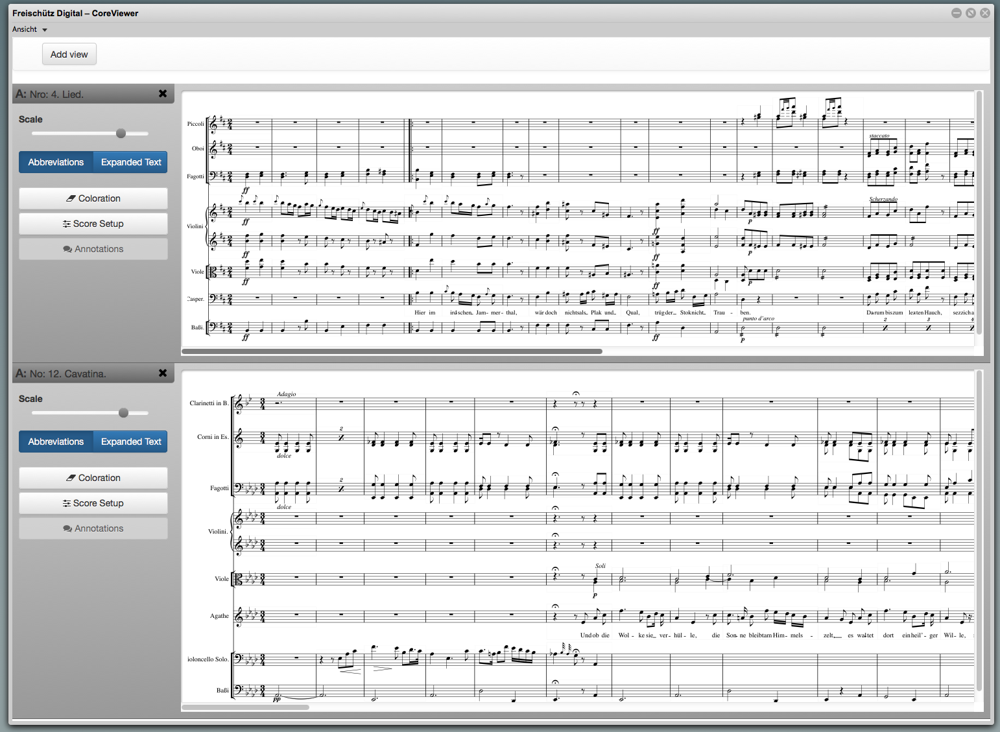
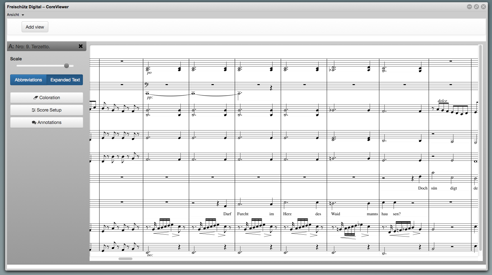
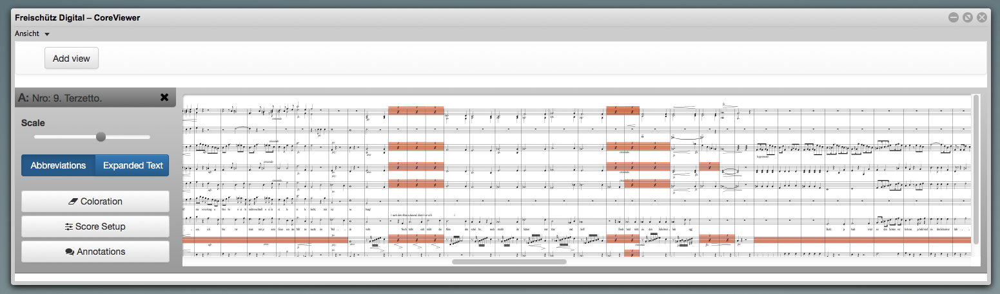
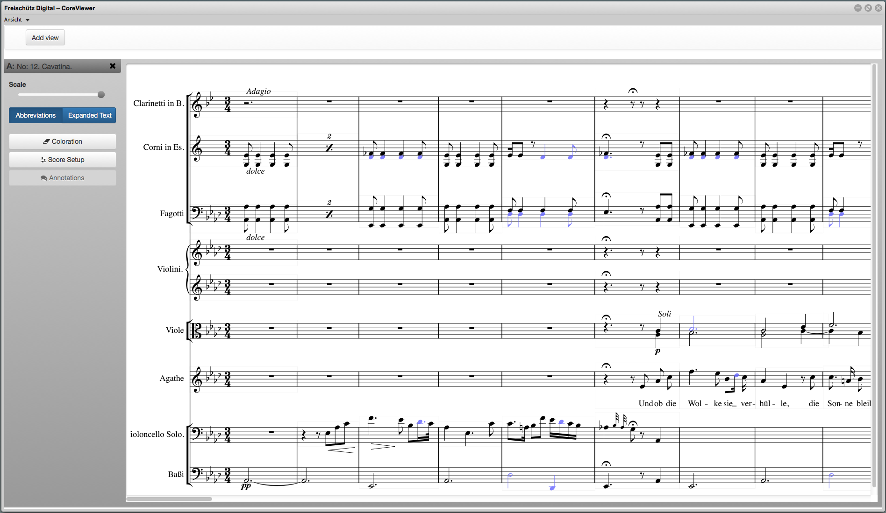
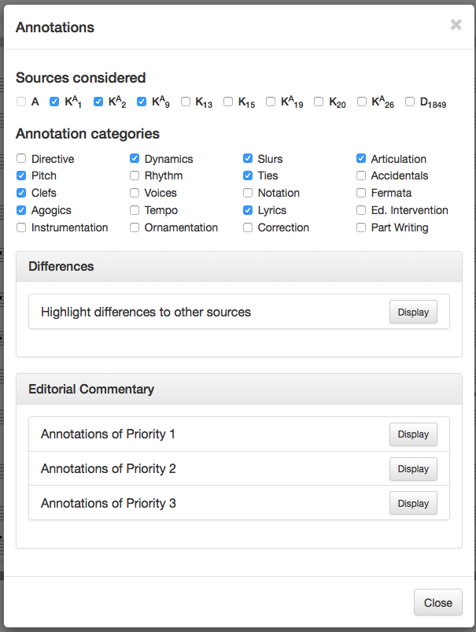

Music-Text Demos
Explanation of Dynamic Score Display (Dynamic Score Rendering)
The “Dynamic Score Display” can be selected directly as demo: Demonstrator or accessed in Edirom Online via “Music edition: Edition”.
Demo: Dynamic Score Rendering
Displays encoded music text
Opening the demo with the “Add View” button (in the upper left corner) displays an overview of the encoded music numbers:
- all numbers in the autograph of the work
- numbers 6, 8, and 9 in the copyists’ texts
Clicking on the “Open” button initially displays the individual numbers in a sharply reduced overview that can then be zoomed in on with the slider.
Please note that the scores will be rendered by Verovio ad hoc in the background and are based on massive encodings. Both loading and zooming in on large numbers can involve longer wait times!
Demo: Dynamic Score Rendering
Displays selected systems
Via the “Score Setup” menu (in the left part of the window), the individual systems that are not to be displayed can be deselected after zooming in on them, or single systems can be displayed by clicking on “Solo.” Clicking on “Adjust Score” now displays the score with the selected systems.

Demo: Dynamic Score Rendering
A musical number can also be re-opened several times to display different system combinations simultaneously.
Demo: Dynamic Score Rendering
Displays multiple numbers in parallel
Several numbers can be selected for simultaneous display and enlarged or reduced in size.
In the left image, an opera number has been selected simultaneously in different sources; in the following image, different opera numbers are displayed simultaneously.

Demo: Dynamic Score Rendering
Demo: Dynamic Score Rendering
Displays written-out abbreviations or shorthand notation (original notation vs. performable text)
Opening a number initially displays by default the abbreviations (for repetition of tones and measures) used as such in the relevant manuscript score. Measures designated in the original simply by letters or by colla-parte instructions are also similarly rendered.
Using the “Expanded Text” button changes the text to show abbreviations written out in full.

Demo: Dynamic Score Rendering
Demo: Dynamic Score Rendering
Highlights abbreviations in the score
The “Coloration” button accesses the “Adjust Coloration” menu to highlight various abbreviations in color.
Reducing the zoom level to a certain point in this type of display makes the individual highlighting flat and two-dimensional to give a very good overview of the distribution of such abbreviations in the score, though the details may not necessarily still be recognizable.

Demo: Dynamic Score Rendering
Demo: Dynamic Score Rendering
Searches for and highlights musical details in the score
Via “Coloration,” abbreviations can not only be located with a predefined XPath search and marked, but customized searches can also be specified.
The search parameters can be entered via the lower field (XPath search) – the example given here is the search within the score for the pitch “d” (@ pname=”d”). The results are then displayed in color, making them visible in the lower right image.
This demo is intended to illustrate only the basic possibilities of searching within MEI files; for practical use it would be worthwhile to develop relevant user-friendly graphic input masks (e.g., via Keyboard, predefined rhythmic parameters, etc.).

Demo: Dynamic Score Rendering
Demo: Dynamic Score Rendering
Displays annotations within the score rendering
Via “Annotations,” the three different levels of annotation can be displayed by colored dots in the music score to facilitate a quick overview of “intensively-annotated” passages. Clicking on the dots accesses the annotated text. (This function is currently still turned off; the annotations are accessible, however, in Edirom Online via “Music edition: Single Annotations” in the menu.)
Automated annotations can, however, be accessed by clicking the upper area of the “Annotations” window to select both comparison sources as well as the categories of annotation topics. (This function is currently also not yet available.)

Demo: Dynamic Score Rendering